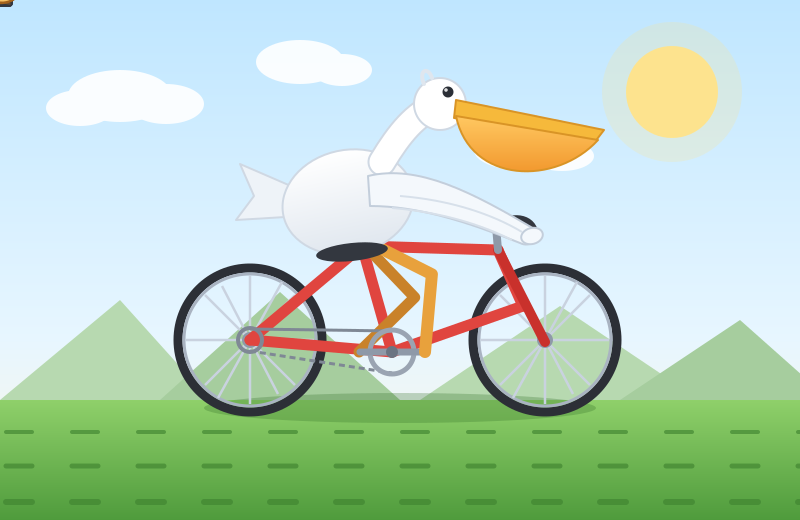

DELIVERABLE / SVG MOTION
鹈鹕
骑单车
一个完整交付案例：从一句自然语言任务开始，生成可直接运行的 SVG 动画，再经过渲染检查、视觉复核与修正。

- 01理解任务
识别这是视觉创作任务，需要同时满足主体清楚、动作连贯、结构可信和可直接运行。
- 02构建画面
用分层 SVG 组织车轮、车架、鹈鹕、围巾与道路，让每个部件都能独立调整和复核。
- 03验证交付
检查车轮与曲柄同步、双脚与踏板的连接、围巾飘动和窄屏缩放，最后输出完整作品。